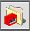
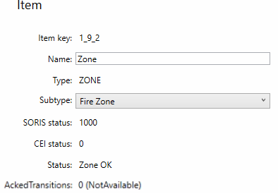

Manually Set New Zones
- Select the desired branch.
- Click Add zone

. - In the Add Zone dialog box, enter the Zone ID and Zone name.
- Click OK.
- Expand the branch, and select the newly created zone item.
- In the corresponding Item area, optionally modify the Name; then select the appropriate value from the Subtype drop-down list.
NOTE: You can add a maximum of 150 zone items. 
- Repeat the previous steps to create all the required zones.
- Under the branch, the new items are highlighted in blue. The additional text
To be downloadedin blue indicates that the item configuration is saved locally only. Its status isDisconnected.